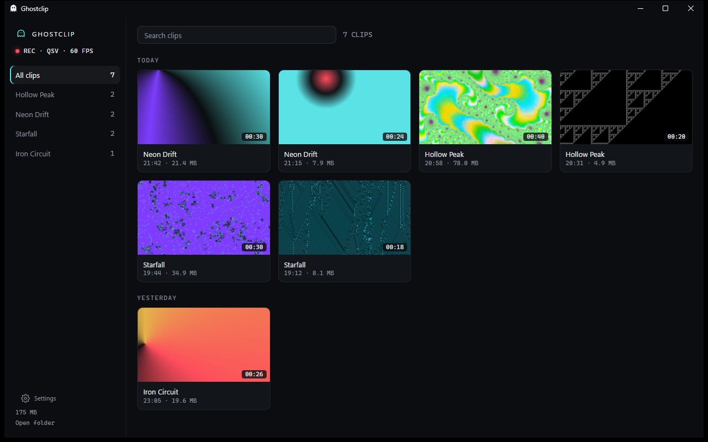
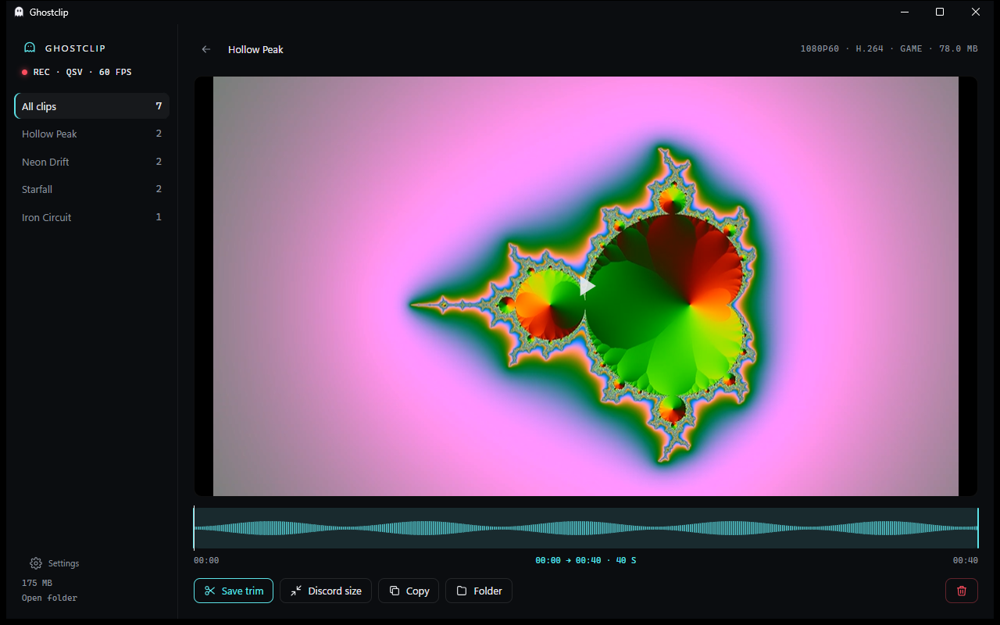

The last minute, one key away
Ghostclip keeps a rolling buffer of your screen and sound. The hotkey saves it as an MP4 in a folder per game: safe in milliseconds, written in under two seconds, never re-encoded.
FREE · OPEN SOURCE · WINDOWS 10 / 11
Press Alt+F10 and the last minute of your game is a clip. Captured and encoded on your GPU, with nothing injected into the game, no account and no ads.

Ghostclip keeps a rolling buffer of your screen and sound. The hotkey saves it as an MP4 in a folder per game: safe in milliseconds, written in under two seconds, never re-encoded.
Record everything you hear, or just the game: no Discord call, no music. It follows the game you play, not whatever window is in front.
The microphone is a separate audio track, so you can turn yourself down later. Mute it per game with a profile.
Every clip by game, with thumbnails and a player. Trim by dragging over the audio waveform: the cut starts on a keyframe, so what you see is what you get.
Compress any clip to fit Discord's upload limit, on the GPU, with game and mic mixed. Or copy the file and paste it straight into a chat.
The library is its own process and exists only while its window is open. In the background there's just a tray icon and the recorder.

On an i7-13620H laptop with Intel UHD graphics, 1080p60 at 20 Mbps, idle desktop. Game benchmarks with FPS and 1% lows are on the way; the script that makes them is in the repository.
Ghostclip isn't code-signed yet, so SmartScreen doesn't know it. Choose More info, then Run anyway. The installer is built in public by GitHub Actions from the source you can read, and signing is on the way.
Ghostclip never touches the game process: no injection, no hooks, no memory access. It records the desktop the way Windows' own screen capture does. That is the kind of recorder anti-cheat systems leave alone, but no tool can promise what a given game will do.
Windows 10 2004 or later, or Windows 11, and a GPU with a hardware encoder: NVIDIA (NVENC), AMD (AMF) or Intel (QuickSync). The installer brings everything else, including .NET and FFmpeg, and needs no admin rights.
To Videos\Ghostclip\<Game>, one folder per game. You can pick another folder in Settings.
The recorder doesn't use the network. The tray app checks GitHub Releases for updates, and that's all. There's no account, telemetry or ads.
Settings > Apps > Installed apps > Ghostclip > Uninstall. It removes the app, its settings and its buffer; your clips stay in your Videos folder.